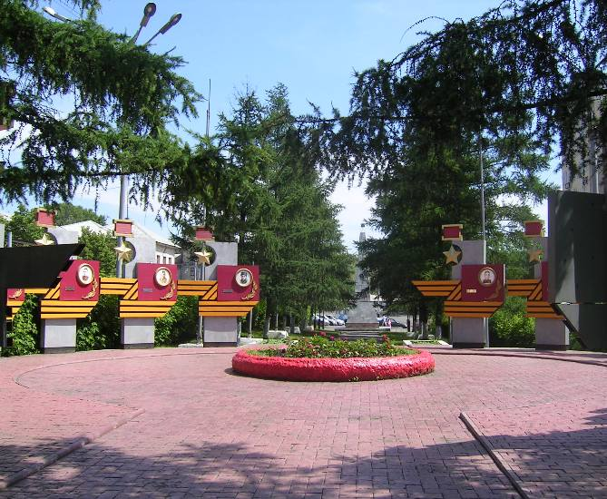
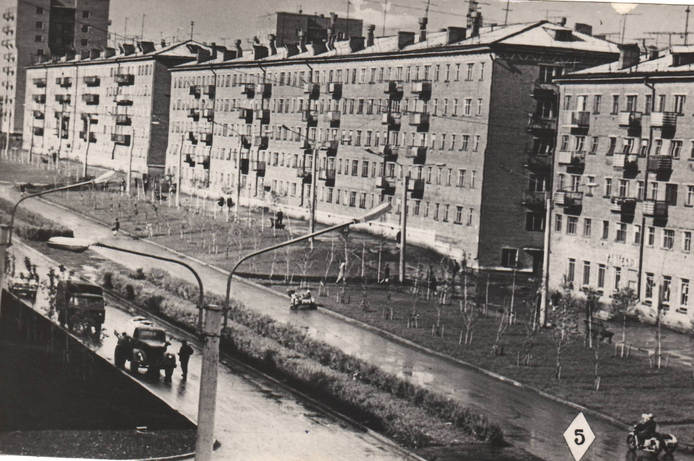
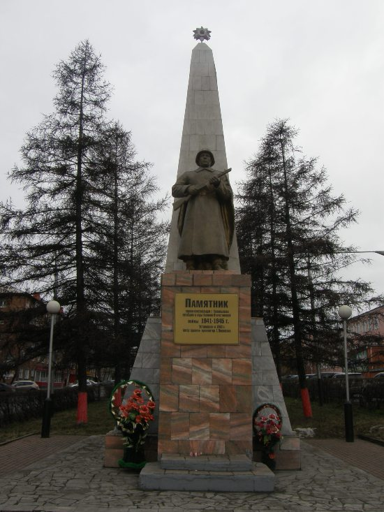
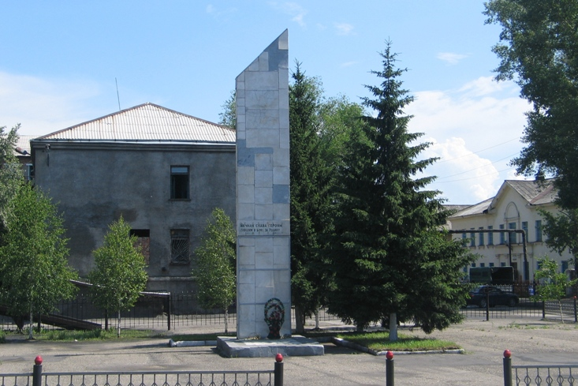

Аллея Героев Советского Союза

В 1986 году в сквере на Комсомольской улице торжественно был открыт комплекс, посвященный прокопчанам - Героям Советского Союза.
Открытие приурочили к 45-летию начала войны, чтобы обостреннее чувствовалось, как велика заслуга этих людей перед нами.
Комсомольская улица и сквер заложены руками комсомольцев 30-х годов. Посаженные в два ряда лиственницы разрослись, их пышные кроны образовали аллею. В центре аллеи круглая, выложенная плиткой площадка с цветником в центре.
Края площадки обрамляют вертикально поставленные плиты с изображением Звезды Героя Советского Союза и гвардейской ленты. На плитах - портреты и имена 16 Героев Советского Союза, биографии которых связаны с Прокопьевском: Азаров Е.А., Буслов Ф.В., Гнедин В.А., Дюжев М.К., Зонов П.П., Колпаков П.И., Мальцев М.А., Мартехов В.Ф., Селиванов Е.И., Уланин Д.Д., Чернов Г.И., Черных И.С., Чеченев М.С., Шеломцев Н.Г., Шишкин М.В. и Шульц М.М.
Уже после установления мемориала поисковая работа открыла новые имена - летчиков Героев Советского Союза - Беляева И.Ф. и Полуновского В.Ф.
Аллея поколений

АЛЛЕЯ ПОКОЛЕНИЙ заложена 15.10.1970 года в честь 50–летия партийной организации города Прокопьевска старейшими коммунистами, чей полувековой стаж в партии совпал с юбилеем партийной организации, и комсомольцами города.
Памятник героям-комсомольцам, погибшим в годы ВОВ

Заложен в 1958 году в честь 40-летия ВЛКСМ и построен на средства, собранные пионерами, комсомольцами и молодежью предприятий города Прокопьевска. Скульпторы А.Н. Чеглаков и А.В. Сидоров.
На четырехгранном постаменте, облицованном красноватым мрамором, установлена фигура воина с автоматом в руках. Позади фигуры расположен обелиск, облицованный серой мраморной плиткой, на вершине обелиска - изображение Ордена Победы.
На постаменте пластиковая табличка с текстом: «Памятник героям-комсомольцам г. Прокопьевска, погибшим в годы Великой Отечественной войны 1941 –1945 г. Установлен в 1960 г. Автор проекта - архитектор Тихон Михайлович Поломских".
Открытие памятника приурочено к 15-летию Победы над фашистской Германией.
Стела землякам, павшим за Родину в 1941 – 1945 гг.

Установлена в честь 30-летия Победы над фашистской Германией. Стела прямоугольная вертикальная со скошенным верхом высотой около 5 м, покрыта мраморной плиткой. В верхней части стелы – изображение Ордена Отечественной войны, в центре надпись: «Вечная слава героям, павшим в боях за Родину».
Назад